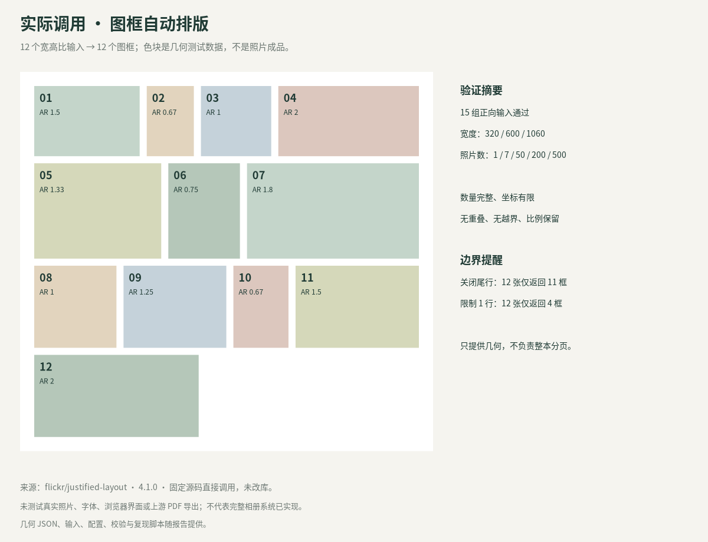
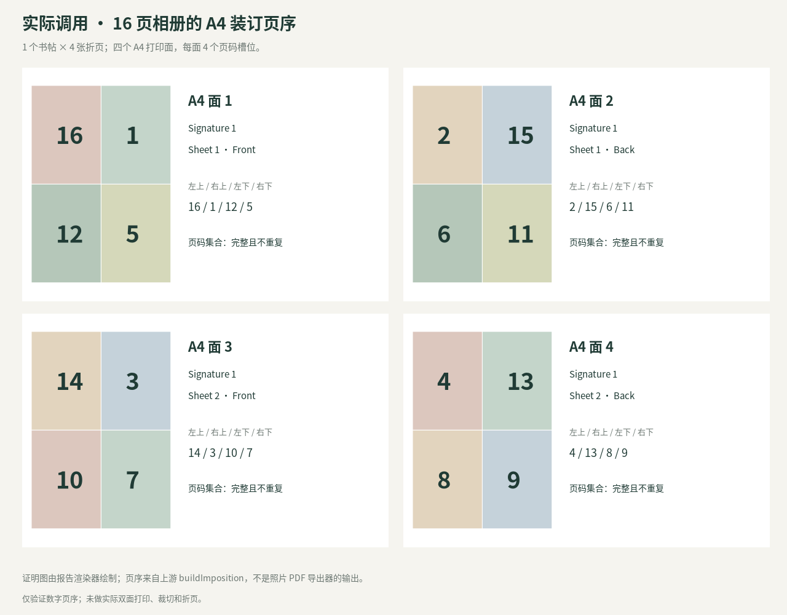

日期：2026-10-21（北京时间）。本文件补充已有 v0.1 设计资料，不代表原有产品方案已获批准或完整产品已实现。
阅读／下载：PDF 报告 · 可编辑 Word · 离线阅读
建议保留“可编辑相册”为核心，把照片艺术创作作为独立入口。相册路径优先保护原片、页数、顺序和裁剪；艺术路径允许生成新的视觉素材，并明确告知用户生成结果的变化范围。艺术图以图片图层加入相册，标题、页码、相册说明仍由确定性渲染器排版，不把整张 AI 图片等同于可编辑图层文档。
本轮继续保留 Fabric.js＋自有文档模型的推荐主线；新增的是布局分层、素材生成分流与输入／输出校验要求。没有据此更换已讨论的首发端、支付模式或导出范围，商业 SDK 仍是可比较的备选路线。
本次实际调用了两个 MIT 许可项目的核心算法：Flickr justified-layout 的排版函数、PhotoBookBinder 的装订页序函数。结果、复现脚本和示意图随本报告交付。没有调用 Zine Skill 生成作品，没有调用魔镜设计的私有 API，没有验证登录后付费功能。
| 参考对象 | 当前结论 | 对本产品的价值 |
|---|---|---|
| 魔镜设计 | 指定主页及 www 主页均无法经当前检索工具读取；精确域名搜索未取得可靠产品资料 | 暂列待补充，不猜测功能、模型、价格或 API |
| Gathered Scenes Zine | 公开创作 Skill；当前个人非商业许可，商业用途需作者事先书面许可 | 研究照片叙事与艺术创作的产品分流；不直接集成提示词或样图 |
| Flickr justified-layout | MIT 正文；已调用真实源码，15 组几何输入通过 | 缩略图排布、联系表、整齐照片行和规则布局的候选基础 |
| PhotoBookBinder | MIT；已调用装订函数，支持配置内 16 组通过；12 组非法奇数边界失败 | 后续专业印刷扩展中的折页页序、裁切／跨页验证参考 |
| fotobuch | AGPL-3.0-or-later；文档与源码结构评估，未运行 | 整本分配与单页优化分层、保留比例、分组和增量缓存 |
| Book Builder | 页面布局与导出源码可读；本次未见仓库许可证 | 编辑流程与风险案例参考；未获许可前不复制代码或商用集成 |
| Spacerat photobook | 单 HTML 相册工具；本次未见仓库许可证 | 时间顺序、动态分页、本地保存的交互与算法思路参考 |
| Polotno | 商业 SDK，官方文档覆盖相册、多页和图片清晰度检查 | 买 SDK 路线的对照，不视为免费开源库 |
来源：用户指定主页。尝试主页和 www 入口，检索工具均返回不可访问；精确域名搜索未获得可采信的官方产品页。当前没有可用的连接浏览器工具，不能进一步操作页面。此结果仅表示本会话未能读取，不代表网站宕机或在用户设备上打不开。
没有把其他同名“魔镜”产品的内容归到这个域名，没有尝试绕过访问控制，也没有猜测隐藏接口。后续可补充无需登录的产品介绍／演示地址，或由用户提供关键页面截图；无需提供密码、验证码或支付凭据。
待核验的具体项目：上传到成品的步骤、可编辑图层与整图生成的区别、照片忠实度、中文文字质量、批量排版、支持的导出尺寸／格式、计费与失败退点、数据留存、可用 API 及其商用合同。这些都不能在当前报告中当作已确认能力。
仓库的主要创作路径分别保留原照片作拼贴素材，或把照片当作语义参考重新创作插画。它更接近 AI 图像创作流程，不是多页相册编辑器或图层文档渲染引擎。目录中还有实况照片相关脚本，不能据此推断已有 SaaS 后端。官方 README。
许可证明确限定个人非商业用途，并要求商业服务、客户项目及相应输出的商业使用取得事先书面许可。当前没有该授权记录，因此本次没有安装或调用其中的 Skill，没有复制提示词、品牌素材、样图或脚本进入项目。许可证正文。
可独立评估的产品问题是：用户此刻要保留照片事实，还是希望获得新的艺术表达。建议以原创需求设计这两个入口，并独立开发参数、提示词和素材；如以后直接采用该项目，先核对书面商用授权对 SaaS、输出、署名、修改和再分发的覆盖范围。
输入照片宽高比或尺寸，输出图框的 x／y、宽／高及容器高度。它不处理会员、AI、跨页、字体、素材授权或整本分页，也不直接导出照片成品。README 与源码。
本次直接 require 固定提交的 lib/index.js，没有安装 npm 包。LICENSE 正文及源文件标注 MIT，但 package.json 的 license 字段写 ISC；正式选型需保留这一差异并锁定来源，不仅依赖 npm 元数据。该项目本次看到最近推送为 2023 年，不能把算法可用推导为持续有人维护。LICENSE／package.json。
用途判断：适合图库和联系表，也可以做某些照片行模板的基础。它给的是可变高度容器；固定高度相册页仍需分页、留白和溢出策略，不应直接把长图库缩到一页里。
浏览器工具提供图框布局、自动填片、跨页、裁剪和 A4 上的 A6 折页拼版。LICENSE 为 MIT。其流程更偏手工装订，首期普通相册导出无需继承全部拼版复杂度。仓库与说明／LICENSE。
源码值得核查的差异：README 把 JSON 项目保存列为后续改进，但当前 app.js 已包含 saveProject／loadProject。研究结论应区分文档描述、静态代码发现和实际运行；本次没有把保存／读取 UI 标成已测试通过。对应源码。
项目文档将整本照片分配与单页图框优化分成两层，分别处理页数／分组和单页构图；使用 Rust、Typst，并区分预览与正式图像缓存。其无裁剪取向适合重视原始构图的摄影师，但本产品仍需同时支持用户明确选择的 cover 裁剪。官方说明／布局引擎说明。
许可证为 AGPL-3.0-or-later，不是不可商用。若把适用代码纳入网络服务或修改部署，需要评估对应源码提供等许可义务；把进程分开本身不等于免除义务。本次仅做文档／源码评估，未构建或运行，不将作者关于速度和效果的描述视为实测。LICENSE／构建依赖。
React／Zustand／Vite 工具，支持相册／Zine 模式、图框、文字、跨页、PDF 和结构化布局。README 提示依赖 File System Access API，以 Chrome／Edge 为主要使用端；这条本地文件路线不能直接照搬到微信小程序。README。
静态源码检查发现：读取全清图片失败时可回退到缩略图，图片加载失败时绘制函数会直接返回；文字换行按空白切词。这些路径对于商业相册有低清／缺图静默导出和中文换行风险，需要单独验证与阻断。此处是代码审查结论，尚未复现完整浏览器导出。pdfExport.ts。
仓库元数据 license 为 null，本次递归文件树未见许可证。公开可读不等于获得修改、再分发或商业集成授权；暂不纳入可直接复用组件清单。
单 HTML、IndexedDB 本地保存，README 描述基于时间顺序分段、动态规划分页与 justified rows。导入时会压缩图片，因此是否保留全清原片需明确分层；“浏览器打印成 PDF”也不能自动等同于生产级印刷输出。README。
本次递归文件树未见许可证，元数据 license 为 null；只做公开文档和结构评估，没有复制或运行其代码。
官方相册方案介绍了多页 JSON、图框清晰度检查、可锁模板和保存恢复。PDF 文档明确区分栅格和矢量路径，以及物理尺寸与实际像素清晰度的关系。这些可作为采购验收项目，不能据官方介绍宣称已验证中文／特效／印厂兼容。相册方案／PDF 导出文档。
保留为买 SDK 路线，需核验具体合同、费用、自托管和素材访问；本次没有申请密钥、采购或调用收费 API。
固定源提交：9d4db49cdbf45604c63a8b25293650af4fe952ab。使用 Node.js v24.19.0，直接加载原库，不安装开发依赖。
组合：容器宽 320／600／1060 × 照片数 1／7／50／200／500，共 15 组。正向用例均启用 showWidows=true，不限制 maxNumRows。检查返回数量、有限正尺寸、边界、无重叠和比例保留，15 组全部通过。该结果是几何不变量验证，不是视觉美观评分，也不是运行性能承诺。
额外边界实验：同一组 12 张照片，showWidows=false 返回 11 个图框；maxNumRows=1 返回 4 个。它们是组件提供的截断选项，不能直接用在“全部照片必用”的相册语义中。调用适配层必须检查每张输入照片的分配，遗漏时重新分页或返回明确错误。
输出：真实几何 JSON、PNG 图框示意、SVG、PDF。色块代表不同宽高比的输入，不是照片成品。
固定源提交：b9c10ad8a9911e65d4cee8c5289519de29d0aa0f。只提取并执行已读过的 buildImposition 纯函数；没有执行整个浏览器脚本。
组合：1／2／6／20 个书帖 × 每帖 2–8 张，共 28 组。偶数张配置 16 组通过页集合完整、无重复、整数页码和范围检查；奇数配置 12 组出现重复页分配。例：1 个书帖、3 张输入应有 12 页，却得到 16 个槽位、仅 12 个唯一页码。
界面输入设置 step=2，正常步进预期为偶数；但 dRebuild 只限制范围，JSON 载入也未在该边界检查偶数，因此不能把前端步长当作服务端数据校验。此结论定位于固定版本的算法／输入边界，不声称正常偶数配置全部打印错误。
没有修改上游代码，没有创建上游 issue。后续如复用，应在项目导入、API 和导出前统一校验参数，或经设计／折纸实物验证后扩展奇数方案。
输出：装订页序 JSON、PNG 四面示意、SVG、4 页 A4 证明 PDF。证明 PDF 由独立报告渲染器绘制页码色块，不是上游的照片 PDF 导出器输出，也没有完成实际折页验证。
完整结果包含每个配置、源提交和限制。复现脚本仅使用 Node 内建模块和本地克隆的 upstream 源码。
未测试：浏览器 UI、真实照片裁剪、中文字体、完整 PDF 导出、手机兼容、生产负载、物理折页、付费 API。没有把图像生成样片当作算法实测。测试源代码和第三方依赖没有打包进入本产品运行环境。
以下是待评审建议，不擅自扩大已经确认的首期范围：
| 用例 | 通过条件 |
|---|---|
| 排版库隐藏尾行／限制行数 | 即使低层库未返回全部图框，产品也明确报错或重新分页，不能静默丢片 |
| 原片无法读取、仅剩缩略图 | 高清导出阻断；预览可继续且标明原片缺失 |
| 中文连续文本与标点 | 按中文断行规则处理，超框可见，不依赖英文空格分词 |
| 参数来自导入 JSON | 重新校验页数、尺寸、有限坐标、枚举与装订合法范围 |
| AI 创作进入相册 | 原图不被覆盖；生成来源与版面文字各自可追溯 |
| 非商业／未授权预设 | 服务端拒绝发布到商业预设库，运营端显示授权缺口 |
在隔离研究目录克隆以下两个仓库，保留原 LICENSE，并 checkout 已记录提交；不要把第三方示例替代产品服务。
git clone https://github.com/flickr/justified-layout.git justified-layout
git -C justified-layout checkout 9d4db49cdbf45604c63a8b25293650af4fe952ab
git clone https://github.com/Kubimeter/Photo-Book-Binder.git Photo-Book-Binder
git -C Photo-Book-Binder checkout b9c10ad8a9911e65d4cee8c5289519de29d0aa0f
node /path/to/reproduce.cjs /path/to/research-directory /path/to/results
脚本要求两个固定提交以保证可复现。没有安装或调用任何 Zine Skill，也不需要登录、密钥、用户原片或网络生图服务。

